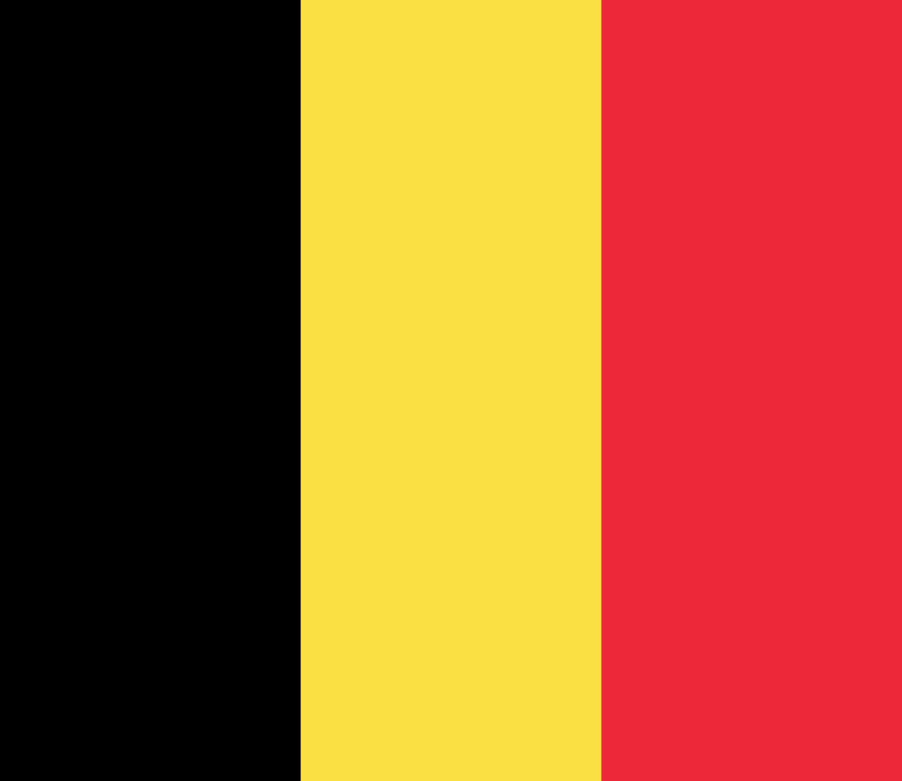

BRUKSEL
ANASAYFA

Brüksel-Başkent Bölgesi (resmî adı: Fransızca: Région de Bruxelles-Capitale, Felemenkçe: Brussels Hoofdstedelijk Gewest, Almanca: Region Brüssel-Hauptstadt) veya kısaca Brüksel Bölgesi (Fransızca: Région Bruxelloise, Felemenkçe: Brussels Gewest, Almanca: Brüsseler Region) Belçika'nın üç bölgesinden biridir